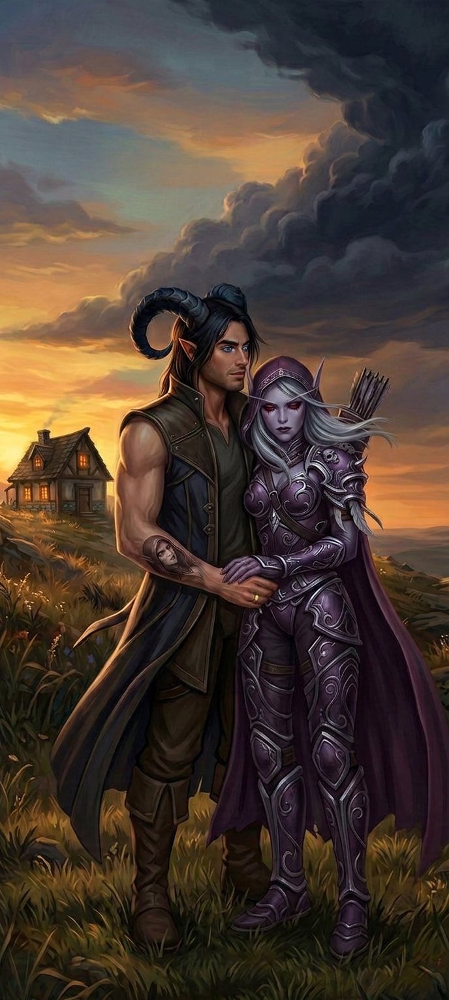

Capítulo Quarenta
O que a gente faz com o tempo que sobra
Mira voltou no quinto dia.
E quando ela voltou, algo tinha mudado nela. Não muito — apenas o suficiente para que Nathan percebesse, porque Nathan percebia tudo quando se tratava de mudanças sutis em pessoas que importavam. Os ombros dela estavam mais tensos. O sorriso tranquilo tinha uma camada a mais — não de falsidade, mas de peso. Do tipo de peso que se carrega quando se sabe algo que os outros ainda não sabem.
— Aconteceu alguma coisa — disse Nathan, quando ela entrou pela porta.
Mira olhou para ele. Olhou para Sylvanas, que estava ao lado dele — como sempre, a mão dela na dele, os anéis pulsando no mesmo ritmo. Olhou para Varokh e Elyra, que estavam na varanda — Varokh com o machado, Elyra com as facas, os dois mais próximos do que costumavam estar.
— Aconteceu — disse Mira. — Sentem.
✦
Eles sentaram na sala. Os cinco. Ao redor da mesa baixa, com o bule de chá no centro e as quatro xícaras — quatro, sempre quatro, do jeito que Mira servia, como se cada xícara fosse um gesto de acolhimento, de pertencimento, de "você está em casa".
Mira serviu o chá. Devagar. Do jeito que ela fazia tudo — sem pressa, sem ceremony, apenas com cuidado. E quando todos tinham suas xícaras, ela falou.
— O Colecionador sabe que vocês estão aqui.
O silêncio que se seguiu não foi de surpresa. Não completamente. Porque todos sabiam — de um jeito ou de outro, em algum momento, com mais ou menos certeza — que esse momento ia chegar. Que a paz que eles tinham encontrado aqui era temporária. Que o Colecionador não ia simplesmente deixar Nathan ir. Que portas que foram abertas por alguém podem ser atravessadas por esse alguém de volta.
— Como você sabe? — perguntou Sylvanas.
— Porque eu senti. — Mira olhou para as próprias mãos. — Esse lugar... ele é conectado. Com a Gorja. Com o Colecionador. Com tudo. E quando algo se aproxima — quando algo grande, algo pesado, algo que não pertence aqui se move na direção deste lugar — eu sinto. É como... — Ela pensou. — É como uma sombra no horizonte. Você não vê, mas sabe que está lá.
— Quanto tempo? — perguntou Varokh.
Uma palavra. Simples. Direta. Do jeito que Varokh dizia as coisas quando o assunto era grande demais para grunhidos.
— Não sei — disse Mira. — Dias. Talvez uma semana. Talvez menos.
— E o que ele quer? — perguntou Elyra.
Mira olhou para Nathan. E o olhar dela — aquele olhar castanho, tranquilo, que tinha acolhido todos eles desde o primeiro momento — ganhou algo. Algo que era ao mesmo tempo compaixão e advertência.
— Ele quer você, Nathan. — Ela disse sem rodeios. — Você é a chave. A porta que trouxe vocês aqui foi aberta por ele, e ele usou você — a sua conexão, a sua energia, o que ele colocou dentro de você — para abrir. E agora que a porta está aberta, ele quer usar de novo. Para abrir outras. Para colecionar mais.
— E se eu não quiser?
— Ele vai tentar te obrigar. — Mira olhou para Sylvanas. — E ele vai usar o que você ama como moeda de troca.
✦
A mão de Sylvanas apertou a de Nathan.
Não forte — apenas firme. Do jeito que se aperta quando se quer dizer "eu estou aqui" sem precisar de palavras. E os anéis brilharam — suave, breve, dourado — como se confirmassem o que as mãos já diziam.
— Ele pode tentar — disse Sylvanas, a voz baixa e firme, do jeito que ficava quando ela tinha decidido algo e não havia argumento no mundo que mudasse. — Mas ele não vai conseguir.
— Você tem certeza?
— Tenho.
— Por quê?
Sylvanas olhou para Nathan. Olhou para os olhos azuis dele — aquele azul que tinha sido castanho um dia, antes da fenda, antes do ano sozinho, antes de tudo mudar. Olhou para os chifres de sombra. Para a prótese no braço esquerdo. Para a tatuagem no antebraço direito — o rosto dela, carregado por quatro anos antes de saber que era real.
— Porque ele não entende o que a gente tem — disse ela. — E o que ele não entende, ele não pode controlar.
✦
Varokh limpou o machado.
Não porque precisasse — o machado já estava limpo. Mas porque limpar o machado era o que ele fazia quando estava processando algo grande, quando precisava de tempo para pensar, quando as palavras eram insuficientes e os gestos falavam melhor.
— A gente se prepara — disse ele.
Elyra concordou. Com um aceno de cabeça — curto, firme, do jeito que ela concordava quando o assunto era sério e não havia espaço para provocações.
— A gente treina. A gente planeja. A gente se prepara para tudo. — Ela olhou para Nathan. — E você... você precisa estar pronto.
— Pronto para quê?
— Para escolher — disse Mira, baixinho. — Porque no final, Nathan, é isso que vai importar. O Colecionador vai te oferecer algo. Vai te prometer algo. E você vai ter que escolher. E a escolha... — Ela parou. — A escolha precisa ser sua. Não de Sylvanas. Não de Varokh. Não de Elyra. Sua.
Nathan olhou para Sylvanas. E Sylvanas olhou para ele. E naquele olhar — longo, profundo, do tipo que carrega tudo que não precisa ser dito — tinha uma conversa inteira.
Eu já escolhi.
Eu sei.
E a minha escolha é você.
Eu sei.
✦
Mas antes da preparação, antes do treino, antes do planejamento — houve os dias.
Os dias que sobraram.
E Nathan e Sylvanas viveram cada um deles como se fosse o último. Porque podia ser. Porque eles não sabiam — ninguém sabia — o que viria depois do Colecionador. Se eles iam vencer. Se eles iam perder. Se eles iam continuar juntos ou se o universo ia decidir que não, que eles já tinham tido o suficiente, que a paz que eles encontraram era temporária e que agora era hora de pagar o preço.
Eles não sabiam.
E por isso, eles viveram.
✦
De manhã, eles acordavam juntos.
Sempre. Sem exceção. Do jeito que acordavam quando não queriam desperdiçar nem um segundo do dia — os olhos abrindo ao mesmo tempo, como se os anéis sincronizassem não apenas os corações mas também os ciclos de sono, como se os corpos deles tivessem decidido que acordar juntos era a única forma aceitável de começar o dia.
E a primeira coisa que Nathan fazia — todas as manhãs, sem exceção — era olhar para ela. Para o rosto dela no travesseiro. Para o cabelo prateado espalhado nos lençóis brancos. Para as marcas abaixo dos olhos que pareciam mais suaves agora, como se a paz tivesse começado a curar até as coisas que não deveriam ser curáveis.
E a primeira coisa que Sylvanas fazia — todas as manhãs, sem exceção — era sentir o coração dele. A mão fria dela no peito quente dele, sentindo a batida, contando — porque ela contava, porque contar era quem ela era, e ela não precisava deixar de ser quem ela era para ser outra coisa também.
E então eles se beijavam. Devagar. Do jeito que se beija quando se tem tempo — quando a manhã é longa e o dia é inteiro e a noite ainda está longe e tudo que existe é aquele momento, aquela boca, aquele corpo contra aquele corpo.
E o café era ruim. Elyra continuava fazendo café ruim. E Nathan continuava oferecendo comida para Sylvanas todas as manhãs. E Sylvanas continuava recusando. E Varokh continuava grunhindo. E todos continuavam existindo, juntos, nessa casa que não era deles mas que os recebeu como se fosse.
✦
De tarde, eles treinavam.
Varokh ensinou Nathan a lutar com o machado — não porque Nathan precisasse de mais armas, mas porque Varokh acreditava que um guerreiro deveria saber usar todas as ferramentas disponíveis. E Nathan aprendeu — rápido, do jeito que ele aprendia tudo, com aquela facilidade que o Colecionador tinha embutido nele mas que ele tinha transformado em algo próprio, algo que era mais do que habilidade fabricada, algo que era talento real.
Elyra ensinou Sylvanas a usar facas de arremesso — não porque Sylvanas precisasse, mas porque Elyra queria. Queria compartilhar. Queria ter algo em comum com a mulher que ela admirava mais do que admitia em voz alta. E Sylvanas aceitou — não porque precisasse, mas porque Elyra estava oferecendo, e aceitar era uma forma de dizer "eu vejo você, e o que você tem para oferecer importa".
E Mira observava. Da varanda. Com o chá na mão e um sorriso no rosto. E pensava — do jeito que se pensa quando se está feliz por alguém sem precisar de razão — que talvez, só talvez, esse grupo tivesse uma chance.
✦
De noite, Nathan e Sylvanas voltavam para o quarto.
E a porta fechava. E o mundo lá fora deixava de existir. E eles existiam — apenas eles, no espaço pequeno e infinito daquele quarto, naquela cama com lençóis brancos e cobertores macios, naquele lugar que tinha se tornado deles.
E faziam amor. Todas as noites. Do jeito que faziam quando sabiam que o tempo era limitado — com urgência e com calma ao mesmo tempo, com fome e com reverência, com o corpo inteiro dizendo o que a voz não conseguia dizer.
E depois, ficavam acordados. Conversando. Sobre nada e sobre tudo. Sobre a Terra e sobre Azeroth. Sobre o passado e sobre o futuro. Sobre medos e sobre esperanças. Sobre coisas que eles nunca tinham dito antes e que agora, finalmente, podiam ser ditas.
E os anéis brilhavam. Sempre. No mesmo ritmo. Como se tivessem se tornado parte dos corpos deles, como se tivessem nascido ali, como se sempre tivessem existido.
✦
No sétimo dia, Sylvanas acordou e sentiu.
Não com os sentidos — não com os olhos, nem com os ouvidos, nem com a pele. Sentiu com algo mais fundo. Com algo que não tinha nome mas que existia no espaço entre o coração e a alma, naquele lugar onde as coisas são sentidas antes de serem compreendidas.
Ela sentiu que ele estava perto.
O Colecionador.
Não aqui — não ainda. Mas perto. Perto o bastante para ser sentido. Perto o bastante para que o ar ficasse mais pesado, para que a luz perdesse um pouco do brilho, para que os anéis pulsassem de um jeito diferente — não dourado, não suave, mas trêmulo, como se estivessem sentindo algo que os corpos ainda não tinham processado.
— Nathan — disse ela, baixinho.
— Hm.
— Ele está vindo.
Nathan abriu os olhos. Olhou para ela. E não precisou perguntar se ela tinha certeza. Porque ele sabia — do jeito que se sabe quando a pessoa que a gente ama diz algo com aquela voz, aquele tom, aquela certeza que não admite dúvida — que ela tinha.
— Quanto tempo?
— Pouco.
E Nathan puxou ela para perto. E segurou. Forte. Com tudo que tinha. Como se segurar ela com força suficiente pudesse impedir o mundo de tirar ela dele.

— Então a gente aproveita — disse ele, baixinho, contra o cabelo dela. — Cada segundo que sobrar. Cada minuto. Cada hora. A gente aproveita.
— E depois?
— Depois a gente enfrenta. — Ele beijou a testa dela. Aquele ponto entre o capuz e o cabelo, onde a pele era mais macia. — Juntos.
— Juntos — repetiu ela.
E os anéis brilharam. Uma última vez naquele dia. Forte. Intenso. Dourado. Do jeito que brilham quando duas pessoas sabem que o tempo está acabando e decidem, mesmo assim, que cada segundo que sobra vale uma eternidade.